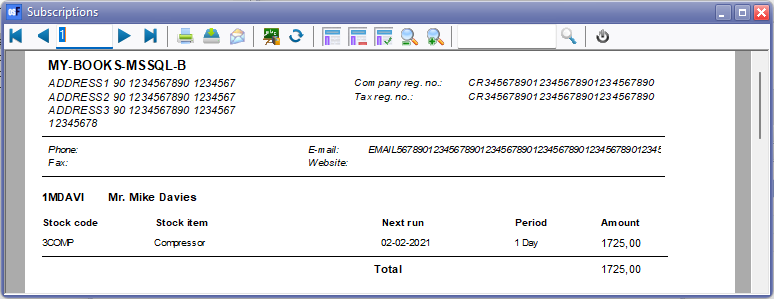
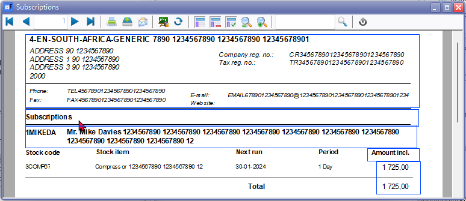

2024-osFinancias5.1 - Build 5.1.0.127 Release notes
ADDED - GDI scaling (Graphics Device Interface scaling) support
osFinancials5.1.0.109 supports GDI scaling, or Graphics Device Interface scaling. It refers to the process of adjusting the size of graphical elements on a computer screen based on the display resolution and pixel density. The Graphics Device Interface (GDI) is a component of the Windows operating system responsible for rendering graphical elements such as text, images, and graphical user interface (GUI) elements.
As display technologies advance, screen resolutions increase, and devices with different pixel densities become more prevalent, it becomes essential to scale the graphical elements appropriately. GDI scaling helps ensure that these elements appear at a reasonable size and are visually consistent across various displays.
Windows operating systems include a feature called Display Scaling, which allows users to adjust the size of text, apps, and other items on the screen. GDI scaling plays a role in this process by ensuring that the graphical elements are resized correctly without losing clarity or becoming pixelated.
In essence, GDI scaling helps provide a more consistent and visually pleasing user experience on displays with different resolutions and pixel densities, ensuring that the graphical elements are appropriately sized and easy to read or interact with.
Windows Registry - REGEDIT osFinancials5
Windows Registry - REGEDIT Added osFinancials5 in osFinancials5.1.0.127
All previous installations or updates of osFinancials5.1 (before osFinancials5.1.0.127) and osFinancials4.0.1093 will update the "Computer\HKEY_CURRENT_USER\Software\osfinancials" in the Windows registry.
"Computer\HKEY_CURRENT_USER\Software\osfinancials5" will since installations or updates of osFinancials5.1.0.127 be created and or updated.
See - FIX for Debtor accounts / Creditor accounts lookup when creating documents
It also fixed the Debtor / Creditor accounts lookup when creating documents in osFinancials5-453 osFinancials4.0.0.1093
Deleting the HKEY_CURRENT_USER\SOFTWARE\osfinancials in the Windows Registry
FIXED - osFinancials5.1.0.127
User ribbon tab - Auto-learn - selected
Incorrect syntax near ')'.
Incorrect syntax near the keyword 'select'.
Similar to the Firebird error
Dynamic SQL Error
SQL error code = -104
Token unknown - line 1, column 157
select
Budgets (Reports ribbon) - (MSSQL Errors)
FIXED Budgets on Reports ribbon in Firebird Database types - osFinancials5.1.0.127 update
ERROR MSSQL Databases - Budgets on Reports ribbon in MSSQL Database types - osFinancials5.1.0.127 update still produces error:
Incorrect syntax near 'a'.
In MSSQL databases cannot enter and save budgets (Apply to selection button) in Budgets (Reports ribbon).
But can enter budget figures in Setup → Accounts (Setup ribbon).
FIXED - Access violations - POS Input - POS on default ribbon (Ctrl + F6) Standard POS
Fixed in osFinancials5.1.0.127 - If no Sales account is selected, a message will be displayed:
Default customer account not setup! Please setup!
When click on OK it will launch the POS setup (Setup → Point-of-Sale).
Replicated In osF5.1.0.99 and osF5.1.0.100
Access violation at address 5F3580AA in module 'rtl280.bpl'. Write of address 00000240
Replicated In osF5.1.0.93
Access violation at address 08D6542C in module 'osfresource.bpl'. Read of address 000001F0
POS (Standard screen flickers New Invoice / Display area
Replicated in osFinancials5.1.0.127 since osFinancials5.1.0.109
MSSQL Error - Plugin - Location-Serials-Batches
Came right probable when updated the object 'dbo.BatCon'
MSSQL Error Post Batch Purchase Document - Error
The statement has been terminated.
Violation of PRIMARY KEY constraint 'PK__BatCon__DB7D61DFCE4DB78F'. Cannot insert duplicate key in object 'dbo.BatCon'. The duplicate key value is (61).
Posted after second attempt
Updated reports - maximum database fields
osFinancials5.1.0.189 - Reports in the folder (accessed via the Reports menu) were updated and included in the osFinancials5.1.0.189 update folder were updated and included in the osFinancials5.1.0.189 update. These updated reports were included in the osFinancials5.1.0.127 update and osFinancials5.1.0.189 update installation:
- systemreports - Location : " ...\plug_ins\reports\systemreports\ "
- GENERAL - Location : " ...\plug_ins\reports\GENERAL\ "
- documents - Location : " ...\plug_ins\reports\GENERAL\documents\ "
- ledgerview - Location : " ...\plug_ins\reports\GENERAL\ledgerview\ "
- REPORTS - Location : "...\plug_ins\reports\REPORTS\" REPORTS/STOCK - Sidebar reports
Included Reports in osFinancials5.0.189 Update
The following reports Included in osFinancials5.0.189 Update in the ...\osfinancials5\plug_ins\reports\ folder:
excelreports
GENERAL
REPORTS
DEBTORS\reports
Menu access : Debtors grid - Context menu - Reports → Subscriptions
Location : ...\plug_ins\reports\REPORTS\DEBTOR\reports\TRN_9061000.rep - Subscriptions
FIXED
Translated "Bedrag" Static text label TrPExpression19 to include customer language translation Amount Incl. LabelID 651.
CUSTOM('GETTEXTLANG',651,'Amount Incl.',0,0,0)
On this report, these amounts prints inclusive of Tax (VAT/GST/Sales tax), while on other Subscription reports (i.e. "Reporting group1, Reporting group 2, Subscriptions and Subscription list" in the .../plug_ins\reports\REPORTS\SUBSCRIPT folder, the Amounts are printed exclusive of Tax (VAT/GST/Sales tax).
Added Label for Total LabelID 960 to be consistent with other Subscription reports.
Added Report name on print output : Subscriptions
Wordwrap setting true to print longer data for Debtor account name
Report Header - Standardised Header in line with other reports to accommodate larger field lengths in databases overlapping text.
Report Footer - Standardised Footer in line with other reports to accommodate larger field lengths in databases overlapping text.
Report footer was not printing - Setup page - Two-pass report setting.
Before Fixes

After Fixes

REPORTS\SUBSCRIPT
Location : ...\plug_ins\reports\REPORTS\SUBSCRIPT\
The following reports - fixed overlapping labels and expressions descriptions and data for larger field lengths in databases:
LANG_1323.rep - Reporting group 1
LANG_1325.rep - Reporting group 2
LANG_901000.rep - Subscriptions - Report headings for data - Next run label translatable overlapping text in other languages e.g. Afrikaaans.
LANG_901001.rep - Subscription list - Report headings for data - Next run label translatable overlapping text in other languages e.g. Afrikaaans.
systemreports
Excluded Reports in osFinancials5.0.189 Update
The following files Excluded in osFinancials5.0.189 Update in the ...\osfinancials5\plug_ins\reports\ folder:
- Empty.rep - Tidied and standarised report Page header and Page footer to be consistant for all to be consistent with other reports such as on the Reports menu and stock sidebar reports (Print single item - context menu). Includes an empty Detail section.
- New.rep - Empty Page header and Page footer and Empty details section.
- The following reports Excluded in osFinancials5.0.189 Update in the ...\osfinancials5\plug_ins\reports\ folder:
- DOCUMENTS
- userreports
- The following plugins Excluded in osFinancials5.0.189 Update in the ...\osfinancials5\plug_ins\reports\ folder:
- CRM
- EMailInvoice
- remittance
- Subscriptions
FIXED : Reports - After osFinancials5.1.0.127 Update / osFinancials5.1.0.189 update install
These updated reports were included in the osFinancials5.1.0.189 update installation. These Reports were retested in both Firebird database types and in MSSQL database types in osFinancials5.1.0.127.
See - FIXED - After osFinancials5.1.0.127 update - Details / Notes and screenshots
The following reports were updated and fixed.
- systemreports - Fixed some adjustments to text (labels expressions) and data expressions were made in about 7 reports.
- Reports → Debtors → Listing - List delivery address
- Reports → Debtors → Listing - List postal address
- Reports → Creditors → Listing - List delivery address
- Reports → Creditors → Listing - List postal address
- Reports → Stock → Stock In / Out - Stock in / Out
- Reports → Documents → Document listing
- Reports → Tax - Tax per period
- REPORTS/STOCK - Sidebar reports - Stock movement - This report prints similar data to the "Voorraad verloop" report
- Renamed text report name to LANG_906038 to be translatable via the language files. Added report name "Stock movement - Average cost - Grid" in Header section.
- Total print on Page 2 and Total - Data type = Currency as " ##,###,###,##0.00" in Detail of Group section (e.g. 1,000.00) - Set the Group footer data type for the Total (e.g. 1000.00) to display similar than the Detail report section.
- excelreports - Spreadsheet reports → Sales analysis → Sales per period - Fixed - Error in Firebird databases to be updated.
Reports not included in osFinancials5.1.0.127 update osFinancials5.1.0.189 update install
The following reports were fixed in osFinancials5.1.0.109 update but not included in osFinancials5.1.0.127 / osFinancials5.1.0.189 update install:
- DOCUMENTS/DOCUMENTS - Document layout files updated to fix overlapping labels, remarks, etc. to accommodate databases with larger input fields. Standardised the Company and Tax registration numbers before contact details, etc.
Added : Layout files for NON-Standard document types
- Adjustment - TRN_1767
- BOM (Production) Stock Item Type - TRN_3266
- Project - TRN_3556 - Project - Quote
Layout files for NON-Standard document types : Plugins
- Stock in - TRN_906178
- Stock out - TRN_906179
- userreports - Reports in the user reports menu. Restructured and fixed overlapping labels, etc.
- New.rep - Blank report with no Datasets. SubReport-0 consists of three sections Page header, detail and Page footer.
- Empty.rep - Updated and standardized Page header and Page footer.
Reports Fixed after osFinancials5.1.0.189 update install
- Reminders / Remittace plugin - Location : ...\plug_ins\reports\remittance\ - Fixed overlapping labels Auto Expand / Auto Contract and word wrap settings.
Error on Print preview - default.rep layout file
Could not convert variant of type (UnicodeString) into type (Double)
LASTREMITTANCE=11-9-2006
Parameter "LASTREMITTANCE" changed data type to Unknown and back to Date seems to fix this issue.
Location : ...\plug_ins\reports\remittance\nl\layouts\default.rep - Also in English ...\plug_ins\reports\remittance\nl\layouts\default.rep
|
SQL (Original) |
AI FEEDBACK |
|
M.TOTALHOURES := 0 ; M.TOTALHOURES := ((DOCUMENTHEAD.FDURATIONSEC / 60)) ; M.TOTALHOURES := iif(Str(M.TOTALHOURES)='',0,M.TOTALHOURES); M.TOTALHOURES := IIF(M.TOTALHOURES<INVTABEL.MINIMUM_BILL_MINUTES,INVTABEL.MINIMUM_BILL_MINUTES,M.TOTALHOURES); M.TOTALHOURES := round((M.TOTALHOURES - INVTABEL.MINIMUM_BILL_MINUTES) / INVTABEL.INCREMENT_MINUTES, 1) * INVTABEL.INCREMENT_MINUTES +INVTABEL.MINIMUM_BILL_MINUTES; str(int( M.TOTALHOURES / 60)) +':' +str(int(M.TOTALHOURES - int(M.TOTALHOURES / 60)*60)) ; |
M.TOTALHOURES := ToNumber(DOCUMENTHEAD.FDURATIONSEC) / 3600; // Convert seconds to hours M.TOTALHOURES := IIF(M.TOTALHOURES = 0, INVTABEL.MINIMUM_BILL_MINUTES / 60, M.TOTALHOURES); // Handle zero values M.TOTALHOURES := IIF(M.TOTALHOURES < INVTABEL.MINIMUM_BILL_MINUTES / 60, INVTABEL.MINIMUM_BILL_MINUTES / 60, M.TOTALHOURES); // Ensure minimum billing hours M.TOTALHOURES := round((M.TOTALHOURES - INVTABEL.MINIMUM_BILL_MINUTES / 60) * 60 / INVTABEL.INCREMENT_MINUTES, 0) * INVTABEL.INCREMENT_MINUTES / 60 + INVTABEL.MINIMUM_BILL_MINUTES / 60; // Round to increments str(int(M.TOTALHOURES)) + ':' + Right('0' + str(int((M.TOTALHOURES - int(M.TOTALHOURES)) * 60)), 2); // Format as HH:MM |
Fixed MSSQL error in doctype layouts - MSSQL Error DOCUMENTREGEL Dataset (concatenation)
DOCUMENTREGEL:Incorrect syntax near '|'.
- Subscriptions plugin - Reports in 2 different locations, it is:
- Reports - Location : ...\plug_ins\reports\REPORTS\SUBSCRIPT - Fixed overlapping labels Auto Expand / Auto Contract and word wrap settings. The following reports - fixed overlapping labels and expressions (Auto Expand / Auto Contract and word wrap settings) descriptions and data for larger field lengths in databases and standardised Page headers and Page footers:
- LANG_1323.rep - Reporting group 1
- LANG_1325.rep - Reporting group 2
- LANG_901000.rep - Subscriptions - Report headings for data - "Next run" label translatable overlapping text in other languages e.g. Afrikaans.
- LANG_901001.rep - Subscription list - Report headings for data - "Next run" label translatable overlapping text in other languages e.g. Afrikaans.
- layouts - FIXED for English and Netherlands languages:
- English layout - Location : ...\plug_ins\reports\Subscriptions\en\layouts\default.rep
- Netherlands layout - Location : ...\plug_ins\reports\Subscriptions\nl\layouts\default.rep
- REPORTS\DEBTORS\reports\
Menu access : Debtors grid - Context menu - Reports → Subscriptions
Location : ...\plug_ins\reports\REPORTS\DEBTOR\reports\TRN\9061000.rep - Subscriptions
FIXED
- Translated "Bedrag" Static text label TrPExpression19 to include customer language translation Amount Incl. LabelID 651. CUSTOM('GETTEXTLANG',651,'Amount Incl.',0,0,0) On this report, these amounts prints inclusive of Tax (VAT/GST/Sales tax), while on other Subscription reports (i.e. "Reporting group1, Reporting group 2, Subscriptions and Subscription list" in the .../plug_ins\reports\REPORTS\SUBSCRIPT folder, the Amounts are printed exclusive of Tax (VAT/GST/Sales tax). Added Label for Total LabelID 960 to be consistent with other Subscription reports.
- Report header - Standardised Report header in line with other reports to accommodate larger field lengths in databases overlapping text.
- Report footer - Standardised Report footer in line with other reports to accommodate larger field lengths in databases overlapping text. Report footer was not printing - Setup page - Two-pass report setting.
- REPORTS\SUBSCRIPT\
Location : ...\plug_ins\reports\REPORTS\SUBSCRIPT\
The following reports - fixed overlapping labels and expressions descriptions and data for larger field lengths in databases:
- LANG_1323.rep - Reporting group 1
- LANG_1325.rep - Reporting group 2
- LANG_901000.rep - Subscriptions - Report headings for data - Next run label translatable overlapping text in other languages e.g. Afrikaans.
- LANG_901001.rep - Subscription list - Report headings for data - Next run label translatable overlapping text in other languages e.g. Afrikaans.
- CRM - Location : ...\plug_ins\reports\CRM\ - Not updated - Need to activate and configure the CRM plugin before any reports could be printed. - MSSQL Errors in print preview
"DOCUMENTHEAD:Incorrect syntax near '|'."
Help topics
English
Added:
Updated:
Stock sidebar reports
Metatags for SEO
Afrikaans - More modern Afrikaans
Reports-GENERAL-documents Fixes
Fixed - batch.rep
Location : plug_ins\reports\GENERAL\documents\batch.rep
Multi page print - Print report name and batch name on each new page.
Fixed - postedbatch.rep
Location : plug_ins\reports\GENERAL\documents\postedbatch.rep
Fixed - Overlapping labels accounts
Fixed - No data available to print! setting
To do
MSSQL Database reports
Outstanding errors : - MSSQL Database support - Reports
Prints in FIREBIRD Databases
Errors in MSSQL Databases
FIXED - MSSQL Database support - Reports
Fixed - To print on MSSQL and Firebird databases
Debtors
Debtor statements
Location : plug_ins\reports\systemreports\TRN_160\TRN_1090 \TRN_906552 - Debtor statement - Outstanding
Debtors - Age analysis (Userreports)
Location : plug_ins\reports\userreports\TRN_160\TRN_906143 - Balances detail history (open item)
Creditors
Creditor remittance advices
Location : plug_ins\reports\systemreports\TRN_161\TRN_1090 \TRN_906551 - Creditor remittance advises - Outstanding
Creditors - Age analysis (Userreports)
Location : plug_ins\reports\userreports\TRN_161\TRN_906143 - Balances detail history (open item)
Outstanding - Fixed - To print on MSSQL and Firebird databases - Period 2 includes Period 1
Location : plug_ins\reports\systemreports\TRN_160\TRN_1090\TRN_1090 - Debtor statement
Location : plug_ins\reports\systemreports\TRN_161\TRN_1090\TRN_1089 - Creditor remittance advises
Debtor age analysis
Location : plug_ins\userreports\userreports\TRN_160\TRN_906142 - Balances detail
Location : plug_ins\reports\userreports\TRN_160\TRN_906147 - Balances
Creditor age analysis
Location : plug_ins\userreports\userreports\TRN_161\TRN_906142 - Balances detail
Location : plug_ins\reports\userreports\TRN_161\TRN_906147 - Balances